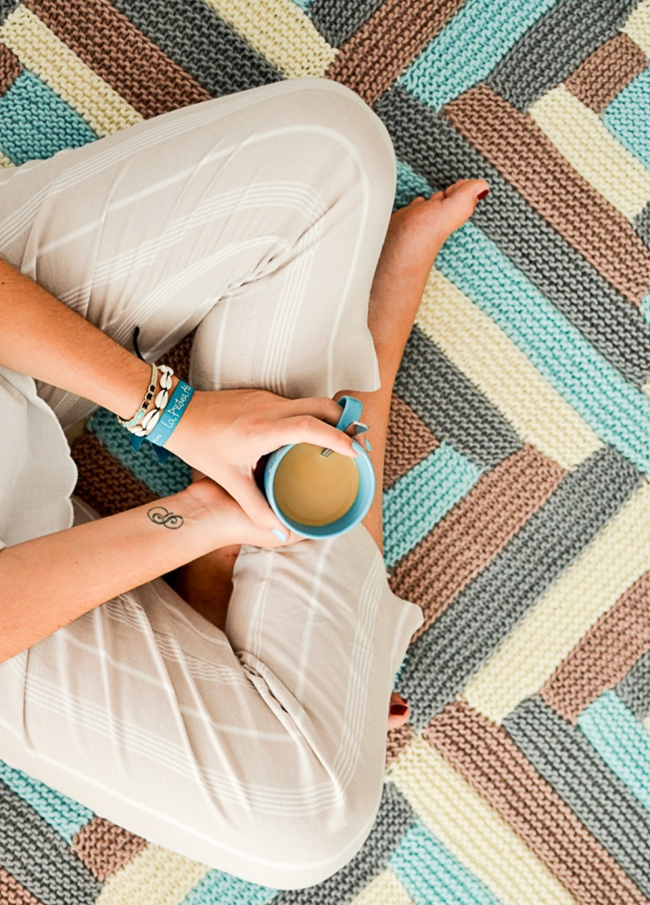

Apasadionada por la creación, amante de lo simple y delicado... Así podría empezar describiéndome. De profesión Sommelier, cuando tuve la suerte de viajar por el mundo conocí diferentes culturas que me inspiraron a hacer algo diferente. Desde pequeña empecé a tejer gracias a la enseñanza de mi bisabuela. Horas y horas de trabajo destinado a familiares y amigos. Pero cuando llegaron mis 2 hijos al mundo me di cuenta de que era el momento de ofrecer mis creaciones para todo aquel que las quisiera. Por eso proyectamos y lanzamos SUAvecitoS... destinado a los más pequeños de la casa... pero también ofrezco un mimito a los sectores destacados del hogar. Gracias por interesarte, por querer conocer mis creaciones. Estoy para resolver tus inquietudes, para fabricar lo que vos quieras o necesités, completamente a gusto, para tu exclusividad.
¿Sabías qué saludable es aprender a tejer desde chicos? Uno de los beneficios más importantes en los niños es la notable mejora de las habilidades motoras, particularmente la psicomotricidad fina y por otro lado la coordinación óculo-mano. Ayuda a estar concentrado en el presente y tener su atención enfocada en no perder los puntos y entrelazar el hilo correctamente, es una actividad que con el tiempo se convierte en un reto personal. Enseña a los más pequeños a perseguir una meta, que es un aspecto fundamental en la vida, además demuestra que el camino para conseguir un objetivo puede ser una tarea entretenida y divertida. Es bueno para las matemáticas, mejora la creatividad... ¡ENTRE MUCHAS OTRAS RAZONES MÁS!
EL TEJIDO ES ALGO MUY IMPORTANTE ES NUESTRA VIDA
Mirá el siguiente video
Suscribite a nuestro newsletter